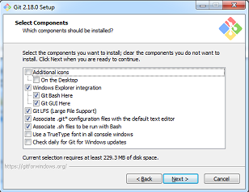
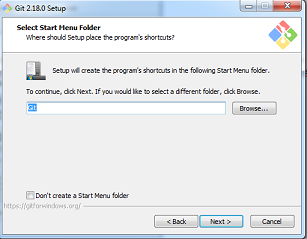
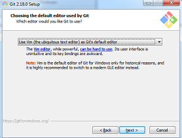
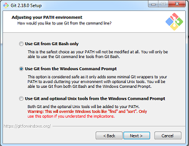
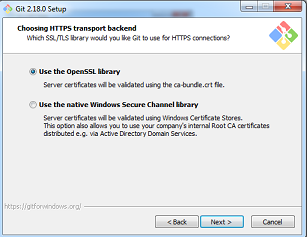
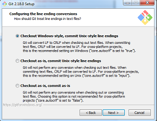
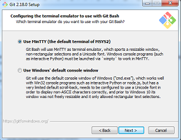
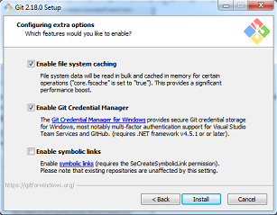
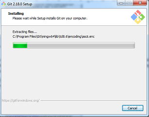
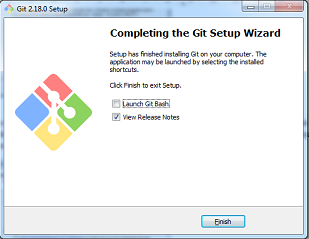

Configurando instalación de Git
En la siguiente pantalla nos muestra algunas configuraciones que podemos cambiar, como el editor de texto, si queremos colocar un icono en el escritorio y demás, por lo pronto lo dejaremos así, solo daremos clic en Next(Siguiente)

En la siguiente pantalla nos muestra el nombre de la carpeta donde deseamos almacenar nuestros proyectos localmente, por lo pronto la dejaremos como esta, solo le daremos clic en Next(Siguiente)

En esta ventana nos indica que por default utilizara el editor vim para trabajar en consola, al hacer alguna modificación a un archivo, daremos clic en Next(Siguiente

En esta ventana, tiene seleccionada por default usar Git como línea de comandos y poder usar git bash para lanzar comandos del propio Git, por lo pronto lo dejaremos así y daremos Next(Siguiente)

En esta ventana, nos indica que el puente de seguridad que va a utilizar Git es a través del protocolo SSL, posteriormente veremos cómo configurar un certificado SSL para que Git no solicite nuestras credenciales de acceso cada vez que realizamos un cambio, daremos clic en Next(Siguiente)

En esta ventana, nos arroja la configuración de conversión de línea final, pero como trabajamos con Windows dejaremos esta configuración como esta, daremos clic en Next(Siguiente)

Aquí en esta ventana, Git utilizara un emulador de línea de comandos de Linux, pero en este caso para poder usarlo se apoyara de git bash, ya que recordemos que vamos a usar Git en Windows, damos clic en Next(Siguiente)

Esta es la última pantalla, en la cual nos muestra algunas configuraciones extras como habilitar los cambios en el sistema de archivos y habilitar el administrador de credenciales de git, la dejaremos como esta y daremos clic en Next(Siguiente)

Después de dar clic en instalar, comenzara el proceso de instalación, tomando en cuenta las configuraciones que previamente colocamos

Esperamos que concluya la instalación y al final observaremos que se completa la instalación con una ventana como la siguiente.
